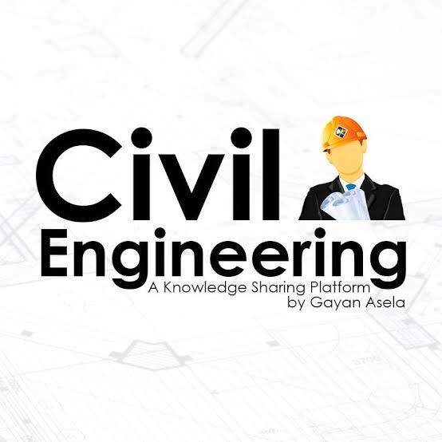
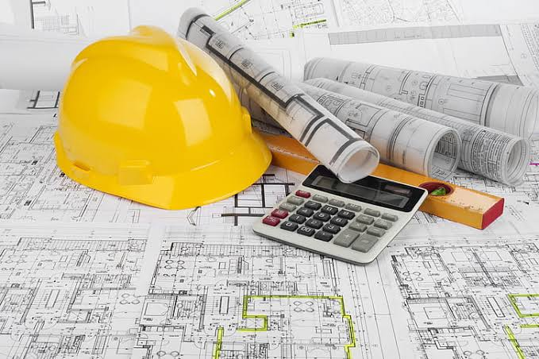
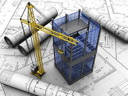

What is Civil Engineering?

Civil Engineering focuses on the planning, design, construction, and maintenance of infrastructure such as buildings, bridges, roads, dams, airports, and water systems. It blends mathematics, physics, materials, and environmental science to create safe, sustainable structures and public works.
Key Areas

- Structural Engineering – analysis/design of buildings & bridges.
- Transportation – highways, rail, traffic flow & safety.
- Geotechnical – soil mechanics, foundations, retaining walls.
- Water Resources – dams, canals, flood control, hydrology.
- Environmental – wastewater, solid waste, sustainability.
- Construction Management – planning, scheduling, cost control.
Applications

- Urban planning and smart cities
- Earthquake-resistant design
- Water treatment and distribution
- Transportation networks and airports
- Coastal and harbor structures
Future of Civil Engineering
The future is driven by sustainable materials, green buildings, digital twins, Building Information Modeling (BIM), and resilient infrastructure to face climate change.